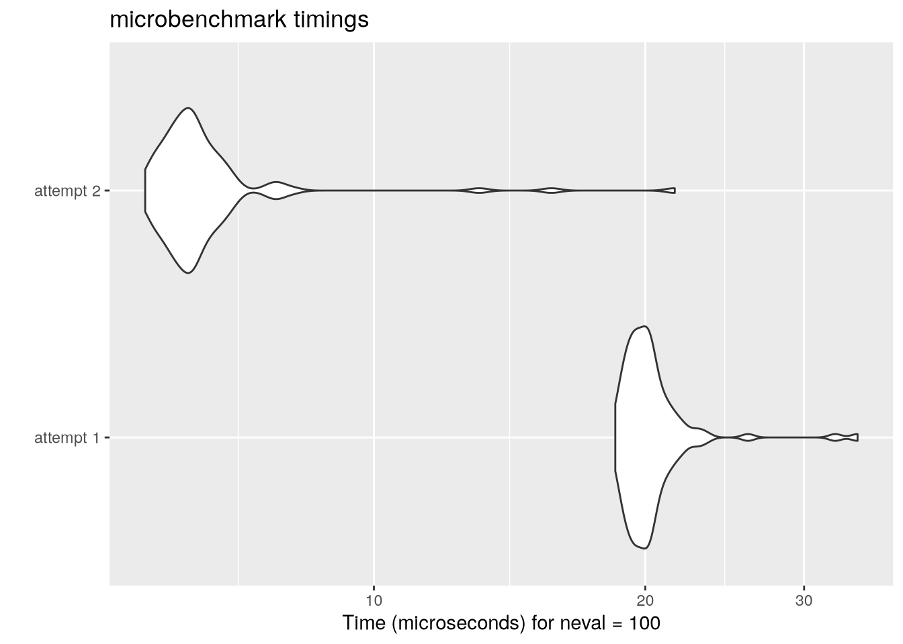

to_binary_1 <- function(n) {
if (n == 0) {
return(0)
}
binary <- c()
while (n > 0) {
remainder <- n %% 2
binary <- c(remainder, binary)
n <- n %/% 2
}
as.integer(binary)
}Recently I’ve been refreshing my knowledge of R by going over problems from the R track on Exercism. A recurring technique needed1 for the problems in these tracks is to be able to convert integers into their binary representation.
First Attempt
My first attempt at converting an integer \(n\) into its binary representation involved repeatedly dividing the integer by 2 and taking the remainders as follows:
Testing this out with \(n = 17\) we get what the expected output of 100012:
to_binary_1(17)[1] 1 0 0 0 1Bitwise Logical Operations
This works fine, however my goal was to explore multiple ways to accomplish the same task. After looking at the community solutions I came across a solution which utilised the R function bitwAnd. This led me to the documentation for this function which stated3:
Documentation
Bitwise Logical Operations
Description:
Logical operations on integer vectors with elements viewed as sets of bits.
Usage:
bitwNot(a)
bitwAnd(a, b)
bitwOr(a, b)
bitwXor(a, b)This was a bit opaque to me and after some research on bitwise logical operations I found that these functions convert their inputs to binary representations and then perform the corresponding logical operation on each bit4. For example: bitwAnd(6, 3) will first convert 6 and 3 to binary: 6 being 110 and 3 being 011. The bits are then aligned5 on top of one another:
| Input | Binary |
|---|---|
| 6 | 011 |
| 3 | 110 |
Performing the and operation on each bit yields 010 in binary which is then converted back to the integer representation of 2 as the following code confirms:
bitwAnd(3, 6) [1] 2Vectorisation is a main idea in R so what should the following expression yield: bitwAnd(6,1:6)?
bitwAnd(6, 1:6)[1] 0 2 2 4 4 6From the result we can see that this is a vector with the \(i^{\text{th}}\) component given by bitwAnd(6, i) as the following table confirms:
| LHS | RHS | Binary_LHS | Binary_RHS | Binary_Result | Result |
|---|---|---|---|---|---|
| 6 | 1 | 110 | 001 | 000 | 0 |
| 6 | 2 | 110 | 010 | 010 | 2 |
| 6 | 3 | 110 | 011 | 010 | 2 |
| 6 | 4 | 110 | 100 | 100 | 4 |
| 6 | 5 | 110 | 101 | 100 | 4 |
| 6 | 6 | 110 | 110 | 110 | 6 |
Second Attempt
This bitwise and operation leads us to an explanation for a much shorter function for converting positive integers to their binary representation:
to_binary_2 <- function(n) {
stopifnot(n > 0)
limit <- floor(log2(n))
as.integer(bitwAnd(n, 2 ^ (limit:0)) > 0)
}Before explaining this function lets test it out:
library(purrr)
1:6 |> map(to_binary_2) |>
map(~ paste0(.x, collapse = "")) |>
unlist()[1] "1" "10" "11" "100" "101" "110"This matches with the binary representations for the RHS given in the table above.
Explanation
Let’s now explain how this function works. The key idea of this function is to use the bitwise and operation to extract the \(i^{\text{th}}\) digit of the binary representation of \(n\) as follows:
get_binary_digit <- function(n, i){
out <- bitwAnd(n, 2 ^ (i - 1))
as.integer(out > 0)
}This works because we perform a bitwise and operation on the binary representations of \(n\) with the binary representation of the appropriate power of 2. The binary representation of \(2^{i - 1}\) has a single 1 in the \(i^{\text{th}}\) position and so performing this bitwise and operation with the binary representation of \(n\) will result in a binary vector with all zeros apart from perhaps a single 1 located in the \(i^{\text{th}}\) position if and only if there is a 1 in the representation of \(n\). Since the bitwAnd function returns the result not as a binary vector but as the integer the binary vector represents we convert the result to the appropriate binary digit by testing if the output is positive6.
Note
This is akin to finding the \(i^{\text{th}}\) coordinate of a vector \(\mathbf{v}\) in a given orthogonal basis \(\{\mathbf{e}_{i}\}_{i}\) by taking the dot product of the vector with the \(i^{\text{th}}\) basis vector:
\[ \mathbf{v} = \sum_{i} v_{i} \mathbf{v}_{i} \]
where the coefficient \(v_{i}\) is given by:
\[ v_{i} = \langle \mathbf{v}, \mathbf{e}_{i}\rangle \]
In the binary representation problem above the binary representations of powers of 2 can be thought of as the orthogonal basis - in fact as a sort of canonical basis for the representation.
Thus, the line as.integer(bitwAnd(n, 2 ^ (limit:0)) > 0) in Listing 2 simply extracts all the binary digits of \(n\) in a vectorised fashion7.
Performance Benchmarking
Let’s use the library microbenchmark to quickly do a performance Benchmark for the two functions given in Listing 1 and Listing 2.
library(microbenchmark)
n <- 134632625
mbm <- microbenchmark(
"attempt 1" = { to_binary_1(n) },
"attempt 2" = { to_binary_2(n) },
check = function(vals) identical(vals[[1]], vals[[2]])
)
mbmUnit: microseconds
expr min lq mean median uq max neval
attempt 1 18.525 19.3285 20.35540 19.9615 20.5455 34.390 100
attempt 2 5.576 5.9890 6.62093 6.2550 6.5535 21.562 100We can see from the above output that our second attempt is quite faster on average.
One nice feature of microbenchmark is that it integrates nicely with ggplot2 and allows easy visualisation of the benchmark results:
library(ggplot2)
autoplot(mbm)
We can see graphically the superior performance of to_binary_2.
Footnotes
Indeed in many of the tracks and in computer science in general.↩︎
Since \(17 = 16 + 1 = 2^4 + 2^0\).↩︎
To see the full docs run
?bitwAndin an R console.↩︎With the convention that the bit 1 represents
TRUEand 0 representsFALSE.↩︎Note that the binary representation is left padded with zeros so the lengths match.↩︎
The output will be positive if and only if the \(i^{\text{th}}\) binary digit was a 1.↩︎
The defintion of
limitasfloor(log2(n))is simply 1 less than the number of binary digits in \(n\).↩︎